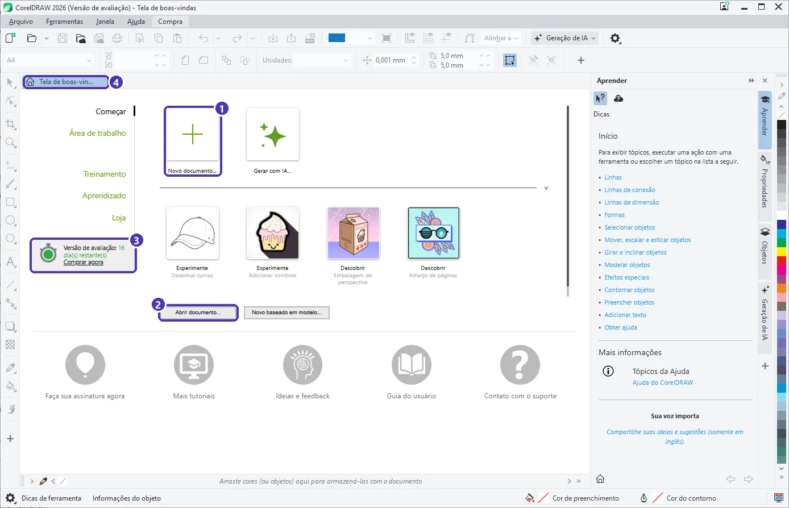
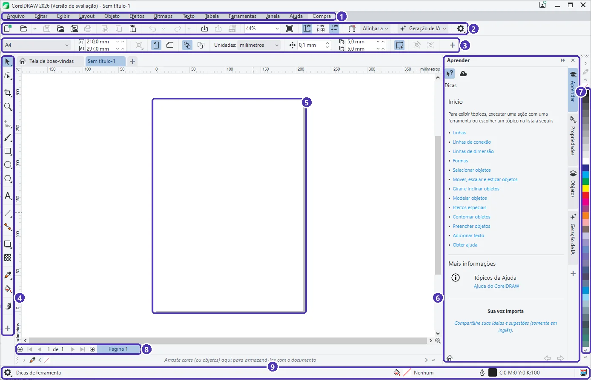

01 — Conhecendo o CorelDRAW: boas-vindas e interface¶
Curso: CorelDRAW
Módulo: 01 — Primeiros passos
Tempo estimado: 1 h
Objetivos¶
Ao final desta aula, você será capaz de:
- Explicar o que é uma imagem vetorial e por que a gráfica gosta dela.
- Usar a tela de boas-vindas para criar ou abrir um documento.
- Reconhecer as nove áreas da interface do CorelDRAW.
- Saber onde ficam as dicas do próprio programa.
Pré-requisitos¶
- CorelDRAW instalado (a versão de avaliação serve) ou o Inkscape.
Vetor × pixel¶
Uma foto do celular é feita de pixels: milhares de quadradinhos coloridos. Amplie demais e os quadradinhos aparecem; a imagem fica “estourada”.
Um desenho vetorial é feito de formas descritas por matemática: “um círculo com tal raio, nesta posição, preenchido de amarelo”. Ampliar é só refazer a conta, por isso a borda continua lisa em qualquer tamanho.
| Pixel (bitmap) | Vetor | |
|---|---|---|
| Exemplos | foto, print de tela | logotipo, cartão, faixa, adesivo |
| Ampliar | perde qualidade | fica nítido |
| Programas | Photoshop, GIMP, Paint | CorelDRAW, Illustrator, Inkscape |
| Arquivos | JPG, PNG | CDR, SVG, PDF, AI, EPS |
Por que a gráfica pede o vetor
A mesma marca vai para o cartão de 9 cm, para o adesivo do carro e para a fachada da loja. Com o arquivo vetorial, a gráfica imprime todos sem pedir “uma imagem maior”.
A tela de boas-vindas¶
Ao abrir o CorelDRAW, aparece a Tela de boas-vindas:


- Começar mostra os atalhos para criar e abrir. Área de trabalho troca a arrumação da tela (deixe a padrão por enquanto).
- Treinamento e Aprendizado trazem tutoriais da Corel. Loja e os avisos de assinatura são propaganda: pode ignorar.
- O botão Gerar com IA usa créditos da assinatura. Neste curso não vamos usá-lo.
Versão de avaliação
A avaliação dura poucos dias e o contador (3) diminui a cada dia. Ao fechar o programa, aparece uma janela oferecendo a assinatura. Basta clicar em Fechar. Quando a avaliação acabar, continue as aulas no Inkscape.
A interface¶
Clique em Novo documento e depois em OK (a janela de opções é assunto da próxima aula). Esta é a tela de trabalho:


| Nº | Área | Para que serve |
|---|---|---|
| 1 | Barra de menus | Todos os comandos: Arquivo, Editar, Objeto, Texto… |
| 2 | Barra de ferramentas padrão | Novo, abrir, salvar, desfazer, importar, exportar, publicar em PDF e o zoom (44%). |
| 3 | Barra de propriedades | Muda conforme a ferramenta e o que está selecionado. Sem nada selecionado, mostra o tamanho da página e as unidades. |
| 4 | Caixa de ferramentas | Seleção, formas, texto, cor… Um triângulo pequeno no canto do botão indica que há mais ferramentas escondidas ali. |
| 5 | Página | O retângulo branco é o que será impresso ou exportado. O espaço em volta é a área de desenho: dá para guardar coisas ali, mas elas não saem na impressão. |
| 6 | Janelas de encaixe | Painéis à direita: Aprender (dicas), Propriedades, Objetos. Clique nas abas verticais para trocar. |
| 7 | Paleta de cores | Clique numa cor para pintar o objeto selecionado (aula 04). |
| 8 | Navegador de páginas | Mostra “1 de 1”, as abas das páginas e o + para criar páginas. |
| 9 | Barra de status | Diz o que está selecionado, a cor do preenchimento e do contorno e dicas da ferramenta atual. |
As réguas, no alto e à esquerda da página, mostram a medida na unidade do documento (aqui, milímetros).
O painel Aprender
O painel Aprender (6) muda de assunto conforme o que você faz. Selecionou um objeto? Ele explica como mover, escalar e esticar. Quando ficar em dúvida, olhe para ele antes de procurar na internet.
Navegar: zoom e rolagem¶
| Ação | Como fazer |
|---|---|
| Aproximar / afastar | Gire a roda do mouse (o zoom segue o ponteiro) |
| Ver a página inteira | Shift + F4 |
| Ver todos os objetos | F4 |
| Rolar para os lados | Arraste as barras de rolagem ou use Ctrl + roda |
| Desfazer | Ctrl + Z (refazer: Ctrl + Shift + Z) |
No Inkscape
- A tela inicial do Inkscape (Bem-vindo ao Inkscape) também cria um documento por tamanho ou abre um recente.
- Barra de menus, barra de controles de ferramenta (equivale à barra de propriedades), caixa de ferramentas à esquerda, paleta embaixo e painéis à direita (Preenchimento e contorno, Camadas e objetos).
- Zoom: roda do mouse com
Ctrl; página inteira:5; todos os objetos:4. - Formato próprio: SVG (no CorelDRAW, CDR).
Exercícios¶
Básico (fixação)¶
Abra o CorelDRAW, crie um documento novo e aponte na tela, em voz alta ou num papel, as nove áreas da interface.
Gabarito — Básico
De cima para baixo: (1) barra de menus, (2) barra de ferramentas padrão, (3) barra de propriedades; à esquerda, (4) caixa de ferramentas; no centro, (5) página na área de desenho; à direita, (6) janelas de encaixe e (7) paleta; embaixo, (8) navegador de páginas e (9) barra de status.
Intermediário (aplicação)¶
Volte à tela de boas-vindas sem fechar o documento e depois retorne a ele.
Gabarito — Intermediário
Clique na aba com a casinha (Tela de boas-vindas), acima da régua. Para voltar, clique na aba do documento (Sem título-1). As abas funcionam como as do navegador: cada documento aberto ganha a sua.
Avançado (desafio)¶
Explique para um colega por que um logotipo enviado em JPG pequeno pode ficar ruim numa faixa de 2 metros, e qual arquivo você pediria no lugar.
Gabarito — Avançado
O JPG é feito de pixels: ao ampliar para 2 metros, cada pixel vira um quadrado visível e a borda fica serrilhada e borrada. O certo é pedir o arquivo vetorial do logotipo (CDR, SVG, AI, EPS ou um PDF vetorial), que pode ser ampliado sem perder nitidez.
💡 Resumo¶
- Vetor é forma descrita por matemática: amplia sem perder qualidade. Pixel é foto.
- A tela de boas-vindas cria, abre e mostra os dias de avaliação. A casinha volta para ela.
- A barra de propriedades muda conforme o que está selecionado: é o lugar mais importante depois da página.
- Só a página sai na impressão; o resto é área de rascunho.
➡️ Próximo passo¶
Na aula 02 você cria documentos no tamanho certo: A4, cartão e o tamanho que a gráfica pedir.